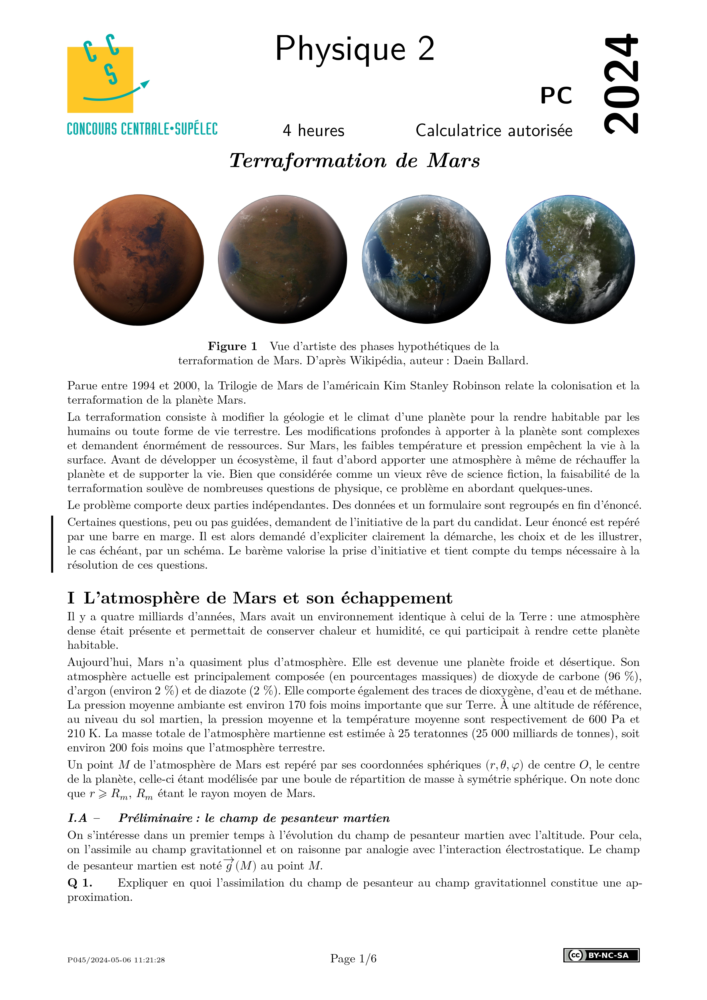
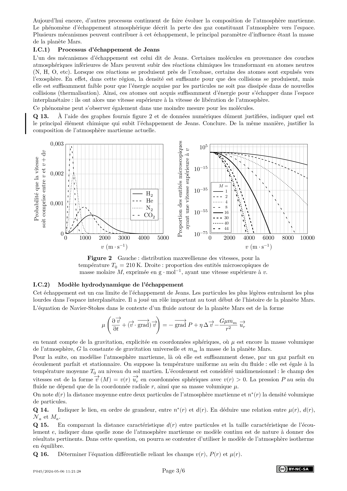
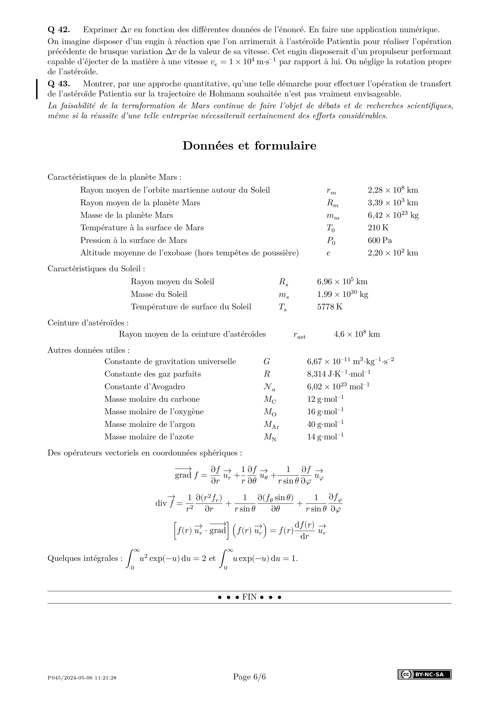
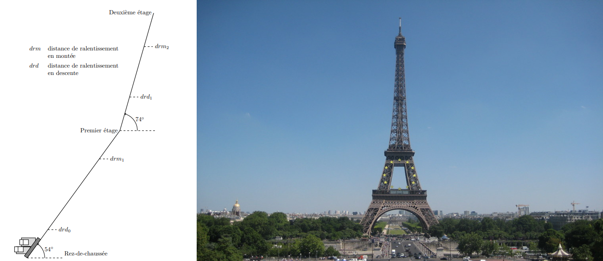
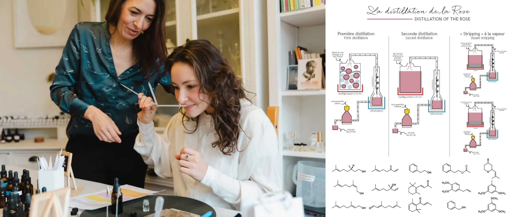
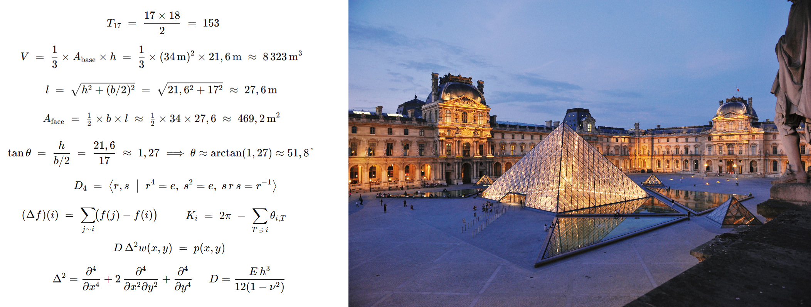
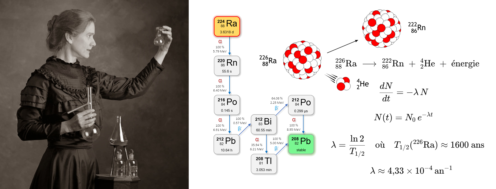
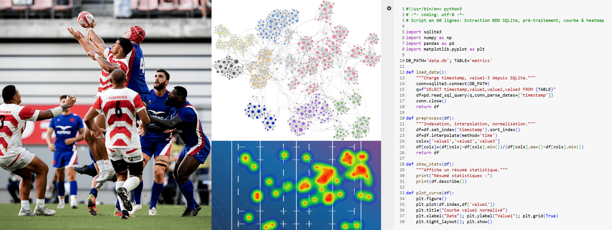

Laurent ABBAL
abbal@keio.jp

PHYSIQUE ~ MATHÉMATIQUES ~ CHIMIE ~ INFORMATIQUE
SUJETS DE CONCOURS
|
 |
 |
 |
MÉCANIQUE DE NEWTON
Le lancer de botte de paille
CONVERSIONS D'ÉNERGIE
L'ascenseur de la tour Eiffel

CHIMIE ORGANIQUE
Parfums et molécules

MATHÉMATIQUES
La pyramide du Louvres

PYSIQUE NUCLÉAIRE
Marie Curie et le radium

INFORMATIQUE
Rugby et visualisation de données
